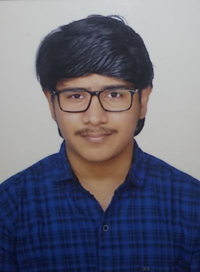

Srivathsan

Summary
Dynamic and motivated software engineer with 1 year of experience at
Cognizant, specializing in web development. Proficient in HTML, CSS,
JavaScript, SQL, and C#. Demonstrating self-motivation, an aptitude for
rapid learning of new technologies, and exceptional problem-solving
and communication skills. Actively seeking employment with a
prestigious IT company to make valuable contributions to cutting-edge
projects.
Education
- B.E - Civil Engineering, Thiagarajar College of Engineering (2018-2022) - 8.44/10
- HSC - CEOA Matriculation Higher Secondary School (2018) - 88.33
- SSLC - CEOA Matriculation Higher Secondary School (2018) - 95.4%
Work Experience
-
Cognizant
- Programmer Analyst Trainee
06/2022 – 06/2023 | Chennai, India
- During this time, I utilized my time to deepen my understanding of
programming languages and frameworks.
- I completed comprehensive training programs in C#/.NET
development and front-end web development using JavaScript,
HTML, and CSS.
- I was part of the internal resource pool, awaiting project
assignments, and worked on support projects.
- I completed online courses in Oracle SQL and C# Masterclass.
- Programmer Analyst Trainee - Intern
12/2021 – 05/2022 | Remote
- The learning curriculum includes in-depth sessions, and hands-on
experience (C#, Html, CSS, JavaScript, SQL) in project works, with
that of attending professional webinars & SME interactions.
- Project: College Management System [CMS] which covers the
entire processes relating to the students [Fees, Library, Leaves,
attendance, etc.] Role: Team member [Team Size 5]
Skills
- HTML: ⭐️⭐️⭐️⭐️⭐️
- CSS: ⭐️⭐️⭐️⭐️
- JavaScript: ⭐️⭐️⭐️
- C#: ⭐️⭐️⭐️
- SQL: ⭐️⭐️⭐️
Others
Contact me